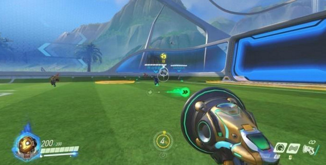

近日《守望先锋》上线新补丁，调整内容之一便是将防守方在所有地图上的复活时间由12秒下调至10秒，这应该是暴雪对于进攻方胜率偏高这一现状作出的重要调整。

打过天梯的玩家可能对进攻方的强势深有体会，特别是面临绝杀局时，玩家更希望自己被选为进攻方，进而拥有更大的胜算。经过调整之后，进攻方和防守方的复活时间统一都是10秒。但是对于低段位的玩家，可能面对堡垒、托比昂的严密防守，他们获胜的几率或许很更小了。
同时该补丁修复了足球模式下可选其他英雄的Bug，这次玩家可以安心享受足球模式的乐趣，而不是被大锤，碉堡等英雄打出翔来。
地图平衡性更新：防守方在所有地图上的重生时间统一为10秒；稍稍降低监测站：直布罗陀地图上运载目标的移动速度
错误修正：修复了英雄选择界面，角色模型读取不完整的问题；修复了若干导致游戏崩溃和出现不稳定情况的问题
竞技比赛：修复了使用某些语言时，用户界面元素无法显示的问题；修复了某些玩家如果断开并重新回到比赛后，出现定级赛界面的问题
（转自腾讯游戏）